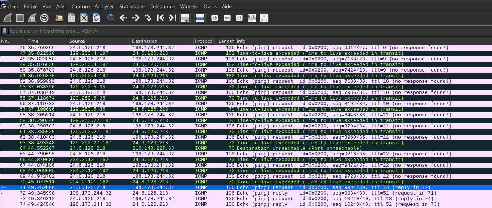

IP — Time To Live
Catégorie : Analyse de capture réseau — Points : 15 — Difficulté : ⭐ (1/5) — Auteur : g0uZ
Rédigé par SPECTRA MZ — détermination du TTL nécessaire pour atteindre une cible via ICMP.
Présentation du challenge
📜 ÉNONCÉ OFFICIEL
Retrouvez le TTL employé pour atteindre l'hôte ciblé par cet échange de paquets ICMP.
| Élément | Valeur |
|---|---|
| Challenge | IP — Time To Live |
| Plateforme | Root‑Me |
| Catégorie | Analyse de capture réseau |
| Points | 15 |
| Difficulté | Facile |
| Auteur | g0uZ |
| Validations | 51 304 (13%) |
Un fichier de capture réseau (PCAP) est fourni. L’objectif est de déterminer, par analyse des paquets, la valeur du TTL nécessaire pour atteindre la machine ciblée.
Vocabulaire clé
ping (Echo Request/Reply) et pour les messages d’erreur.traceroute pour cartographier le chemin.Théorie du TTL et du traceroute
Principe du TTL
Le TTL est un compteur de sauts (hops). Chaque routeur traversé le diminue de 1. Lorsqu’il atteint 0, le paquet est détruit et une erreur ICMP Type 11 — Time-to-live exceeded est retournée à l’expéditeur. Ce mécanisme évite les boucles de routage infinies.
Le traceroute en pratique
Le premier Echo Reply reçu indique que le TTL utilisé est suffisant pour atteindre la destination. Le nombre de sauts est alors égal à ce TTL.
Analyse de la capture
Les acteurs
| Rôle | Adresse IP | Localisation (GeoIP) |
|---|---|---|
| 🖥️ Source (celui qui pingue) | 24.6.126.218 | Danville, États‑Unis |
| 🎯 Cible | 198.173.244.32 | États‑Unis |
Progression des TTL
La capture contient une séquence de pings avec des TTL croissants (de 1 à 13). Les premières requêtes (TTL 1 à 12) reçoivent des réponses Type 11 (Time-to-live exceeded) ; seule la requête avec TTL = 13 obtient un Echo Reply.

| TTL du ping | Réponse reçue | Résultat |
|---|---|---|
| 1 | Type 11 (TTL exceeded) | ❌ Expire au 1er routeur |
| 2 | Type 11 | ❌ Expire au 2e routeur |
| … | … | … |
| 12 | Type 11 | ❌ Expire au 12e routeur |
| 13 | Type 0 (Echo Reply) | ✅ Atteint la cible ! |
La trame gagnante (Frame 71)
Internet Protocol Version 4, Src: 24.6.126.218, Dst: 198.173.244.32
Time to Live: 13 ← TTL initial du ping
Protocol: ICMP (1)
Internet Control Message Protocol
Type: 8 (Echo (ping) request)
Code: 0
[Response frame: 72] ← 💎 LA PREUVE
La ligne [Response frame: 72] indique que la trame 72 contient la réponse. La cible a bien répondu → ce TTL est le bon.
Vérification croisée
Dans la réponse (Frame 72), le TTL restant est de 51. Les valeurs de TTL initiales courantes sont 64, 128 ou 255. On calcule :
64 (TTL initial présumé) − 51 (TTL restant) = 13 sauts
Le calcul confirme parfaitement le résultat : 13 sauts séparent la source de la cible.
🏁 Le Flag
Le TTL employé pour atteindre l’hôte ciblé est :
La validation se fait en soumettant cette valeur sur la page du challenge Root‑Me.
Reproduire l’analyse avec tshark
Pour les curieux, voici comment extraire les informations clés en ligne de commande :
# Lister toutes les trames ICMP avec leur TTL tshark -r capture.pcap -Y "icmp" -T fields -e frame.number -e ip.ttl -e icmp.type # Filtrer uniquement les echo requests et leurs réponses tshark -r capture.pcap -Y "icmp.type == 8 || icmp.type == 0" -T fields -e frame.number -e ip.ttl -e icmp.type # Trouver la première requête qui reçoit une réponse (echo reply) tshark -r capture.pcap -Y "icmp.type == 0" -T fields -e frame.number -e ip.ttl
Leçons à retenir
- Le TTL observé ≠ TTL initial : le TTL diminue à chaque routeur. TTL observé = TTL initial − nombre de sauts.
- Type 11 = échec : un message « Time-to-live exceeded » signifie que le paquet a expiré avant d’atteindre sa destination.
- Type 0 = succès : la présence d’un echo reply indique que la cible est atteinte avec ce TTL.
- Analyser la séquence complète : ne jamais conclure sur une seule trame ; ici, seule la comparaison des requêtes successives permet de trouver la réponse.
- Double vérification : croiser deux méthodes (premier echo reply + calcul 64−TTL_restant) rend l’analyse irréfutable.
Ce challenge illustre parfaitement le fonctionnement du TTL et du traceroute. En suivant la progression des paquets ICMP, on détermine en quelques minutes le nombre de sauts vers la cible. C’est une compétence de base essentielle en analyse réseau et en investigation forensique : savoir lire un en‑tête IP, comprendre les types ICMP et reconstituer une communication à partir d’une PCAP.
Quiz – Validation des acquis
Clique sur une question pour révéler la réponse.
tshark avec les options appropriées.